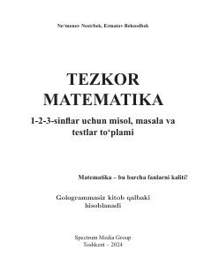

TM1-3-sinf oʻquvchilari uchun matematika fanidan misol, masala va testlar toʻplami.
Ushbu qoʻllanma 1-3-sinf oʻquvchilari uchun moʻljallangan boʻlib, matematika fanidan turli xil misollar, masalalar va test topshiriqlarini oʻz ichiga oladi. Kitob oʻquvchilarning mantiqiy fikrlash va hisoblash koʻnikmalarini rivojlantirishga qaratilgan.